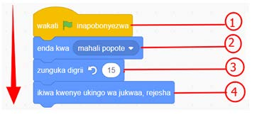

Bloku ya ‘zunguka digrii 15 ↺/nyuzi’ kinyume cha mwelekeo wa mshale wa saa hutekelezwa kabla ya bloku ya ‘ikiwa kwenye ukingo wa jukwaa, rejesha’.
Bloku ya ‘ikiwa kwenye ukingo wa jukwaa, rejesha’ huchezwa mwishoni.

Kielelezo namba 33: Mlolongo katika usimbaji
Hivyo, mtiririko huu unakuwa kama ifuatavyo: ‘Wakati inapobonyezwa’ → ‘enda kwa (mahali popote)’ → ‘zunguka 15 digrii/nyuzi’ → ‘ikiwa kwenye ukingo wa jukwaa, rejesha’.
Muundo wa marudio katika usimbaji
Katika uundaji wa programu za kompyuta, unaweza kuhitaji jambo fulani lijirudie mara kadhaa. Kwa mfano, unaweza kuhitaji mwendo au sauti ijirudie bila wewe kubofya kitufe cha ‘Anza’. Uwezo huo katika usimbaji unajulikana kama marudio. Unapotumia marudio, unaiamuru kompyuta kurudia jambo fulani mara nyingi kadiri unavyotaka.
Kazi ya kufanya namba 11: Mchezo wa sauti unaojirudia
Unaweza kucheza sauti kwa kuifanya ijirudie kulingana na idadi unayotaka. Hatua zifuatazo zitakuongoza kuunda mchezo unaorudia sauti mara nyingi.
SAYANSI DARASA LA IV KITABU CHA MWANAFUNZI.indd 136
17/09/2025 13:14